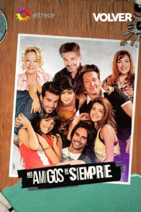

Streaming
TV 90s
Tiras 2000
Tiras 2010
Juveniles
Unitarios
Estrenos 2010–2022
Enero
Febrero
Marzo
Abril
Mayo
Junio
Julio
Agosto
Septiembre
Octubre
Noviembre
Diciembre
No hay estrenos registrados para este mes.
ÚLTIMAS
Comedias Estelares
Thrillers y Dramas
Historias de Época
Para Toda la Familia
Historias de Amigos
Buenos Chicos
El Primero de Nosotros
Millennials
Graduados
Cien Dias para Enamorarse

Mis Amigos de Siempre
Mujeres protagonistas
Las Estrellas
Pequeña Victoria
Guapas
Separadas
Telenovelas Estelares
Desde el Barrio
La 1-5/18: Somos Uno
La Leona
Sos Mi Hombre
Contra las Cuerdas
Telenovelas de la Noche 2010-2022
Telenovelas de la Tarde 2010-2019